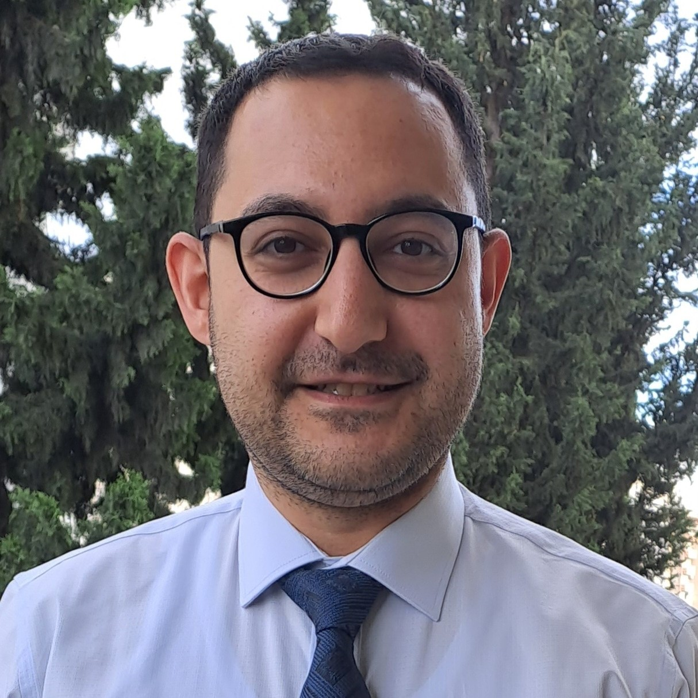

Aykut Terzi

Summary
After more than 7 years of professional experience in the automotive industry, I decided to give a different direction to my career. Currently I am enrolled in BilgeAdam Boost program as a software development trainess and work part-time at ARDE Yazılım A.Ş.
Education
- Master of Science in Transport and Sustainable Development - Paris Institute of Technology (2012-2013)
- Bachelor of Science in Mecahnical Engineering - Middle East Technical University (2007-2012)
Work Experience
Skills
- C# : ★ ★ ★ ☆ ☆
- SQL : ★ ★ ☆ ☆ ☆
- Microsof Office :★ ★ ★ ★ ☆
- English: ★ ★ ★ ★ ★
- German: ★ ★ ★ ★ ☆
- French: ★ ★ ★ ★ ☆
Awards and Certifications
- Intensive German Language Course Scholarship by DAAD - 2011
- Master Scholarship for Academic Excellence by Renault Foundation - 2012
Other
© Aykut Terzi. All rights reserved.